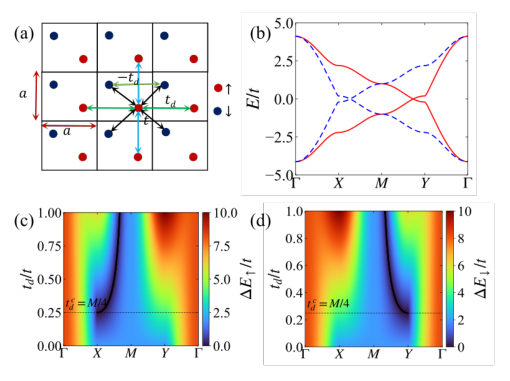
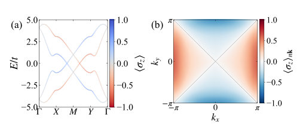
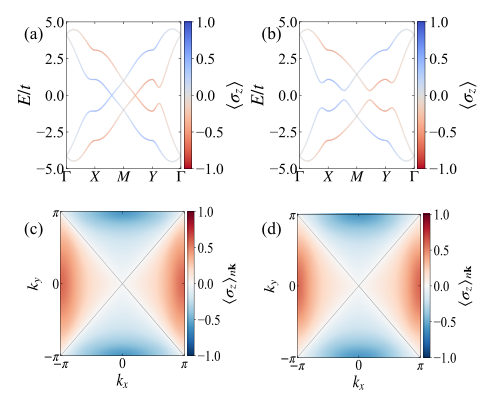

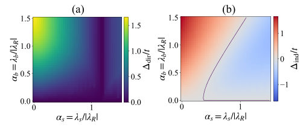
← Index · ← Previous · Next →
Authors: Wenxuan Qian, Yash Chauhan, Ryohei Nemoto, Keisuke Sagisaka, Shunsuke Yoshizawa, Takashi Uchihashi
Type: experiment · Category: other · PDF: https://arxiv.org/pdf/2608.01196v1
Analysis basis: full PDF text, analyzed in chunks
Topic relevance: non-equilibrium dynamics 3/5 · driven-dissipative phase transition 2/5 · non-equilibrium universality 2/5 · Frenkel-Kontorova 1/5 · Keldysh / 2PI / non-Gaussian methods 1/5 · analog quantum simulation 1/5 · correlated / nonlocal dissipation 1/5 · methods for driven-dissipative 1/5
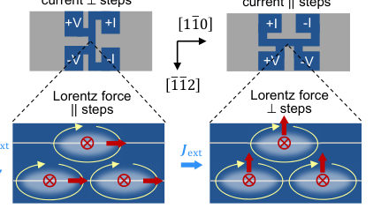
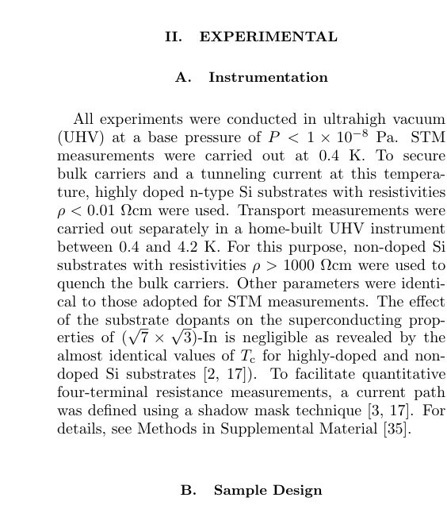
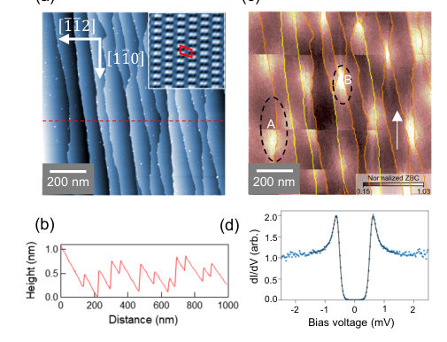
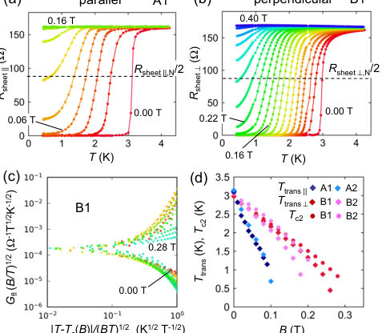
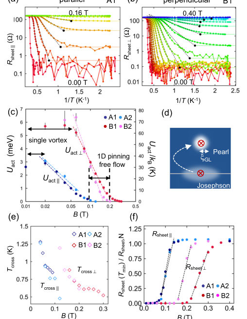
Summary. This work reports on the anisotropic transport of Josephson vortices in atomic-layer superconducting films grown on vicinal surfaces. By combining STM imaging with detailed magneto-transport measurements, the authors demonstrate that vortex motion is highly directionally dependent, exhibiting regimes ranging from thermally activated creep to quantum tunneling. The findings map out a complex phase diagram governed by the underlying atomic step structure.
Why it may be interesting. The strong structural control (atomic steps) leading to highly anisotropic quantum dynamics provides an excellent platform for studying dimensionality crossover, pinning mechanisms, and non-equilibrium transport phenomena in superconductors.
Main problem. The study investigates how Josephson vortices, formed at atomic steps on superconducting surfaces, exhibit highly anisotropic transport properties.
Main result. The vortex transport shows extreme anisotropy ($\sim 10^3$), leading to distinct regimes of motion—from thermally activated creep to one-dimensional pinning-free flow and quantum tunneling—all dependent on the direction relative to the atomic steps.
Method. Magneto-transport measurements (sheet resistance vs. T and B) are combined with Scanning Tunneling Microscopy (STM) to visualize vortex cores and map out the phase diagram.
Model / system. The system is an atomic-layer superconductor, Si(111)-($\sqrt{7} imes\sqrt{3}$)-In, grown on a vicinal surface featuring distinct atomic steps. Josephson vortices are hypothesized to dominate transport at these structural features.
Key observables. Sheet resistance ($R_{ ext{sheet}}$), vortex mobility ($\mu_\phi$), activation energy ($U_{ ext{act}}$), and the anisotropy ratio $\alpha$.
Important parameters / regimes. Temperature (0.4 to 4.2 K), out-of-plane magnetic field (B), and the relative orientation of current/Lorentz force with respect to atomic steps.
Assumptions / limitations. The transport phenomena are dominated by Josephson vortices localized at the atomic steps, which act as effective Josephson junctions.
Figures summary. Figures show STM topography confirming step structures and ZBC images visualizing elongated bright regions identified as Josephson vortex cores. Transport data map out $R_{ ext{sheet}}$ vs. T and B, revealing anisotropic behavior.
Paper structure. The paper establishes the physical system via STM characterization, then presents transport measurements comparing current parallel versus perpendicular to steps. The analysis quantifies the anisotropy in mobility and maps out a complex B-T phase diagram detailing different vortex flow regimes.
Atomic steps have strong influences on surface two-dimensional superconductors. Josephson vortices formed at the atomic steps under magnetic fields may dominate transport phenomena at low temperatures, but its experimental verification is still lacking. Here, we report the vortex transport properties of atomic-layer superconductor Si(111)-$(\sqrt{7}\times\sqrt{3})$-In with vicinal surfaces, for which Josephson vortices are directly observed by scanning tunneling microscopy. A sharp drop in resistance with decreasing temperature $T$, detected under out-of-plane magnetic field $B$, reveals a distinctive anisotropy with respect to the atomic step direction. The anisotropy of sheet resistance, proportional to that of vortex mobility, amounts to the order of $10^3$ at intermediate magnetic fields. In the high-$T$ and low-$B$ region, Josephson vortices exhibit thermally excited creep motions with anisotropic activation energy $U_\mathrm{act}$. A further increase in $B$ suppresses $U_\mathrm{act}$ toward zero anisotropically, resulting in one-dimensional pinning-free vortex flow at $0.10 \lesssim B \lesssim 0.20$ T. At the lowest temperatures, the vortex motion is governed by quantum tunneling. A $B$-$T$ phase diagram constructed based on these measurements reveals multiple regions characterized by directionally dependent vortex-transport mechanisms.
Authors: Shin-ichi Hikino
Type: theory · Category: other · PDF: https://arxiv.org/pdf/2608.01991v1
Analysis basis: full PDF text, analyzed in chunks
Topic relevance: Keldysh / 2PI / non-Gaussian methods 3/5 · spintronics-quantum-optics interface 3/5 · methods for driven-dissipative 2/5 · non-equilibrium dynamics 2/5 · driven-dissipative phase transition 1/5 · exotic spin models in light-matter 1/5
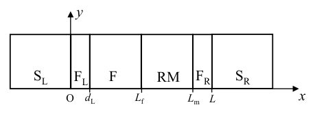
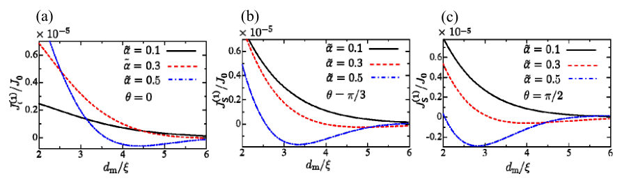
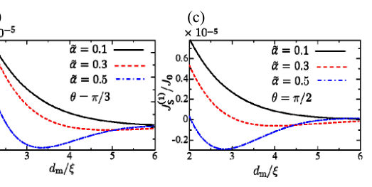
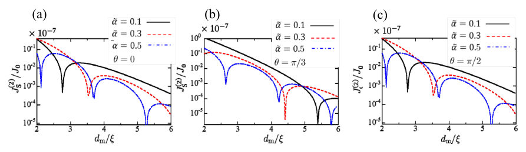
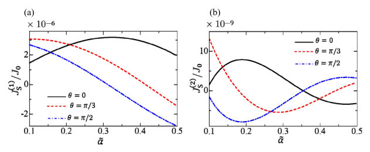
Summary. This paper theoretically investigates the Spin Josephson Diode Effect (SJDE) in a diffusive junction containing Rashba metal. By deriving expressions for both first- and second-harmonic spin currents, the authors demonstrate that the SJDE can be achieved intrinsically via an emergent $\phi_0$ phase shift, eliminating the need for external magnetic fields or structural asymmetries.
Why it may be interesting. This work provides a detailed theoretical mechanism for non-reciprocal transport in superconducting junctions driven purely by internal material symmetries (RSOI/exchange field), which is highly relevant to understanding spin-charge conversion phenomena in mesoscopic devices.
Main problem. The study investigates the mechanism behind the Spin Josephson Diode Effect (SJDE) in a diffusive Josephson junction, aiming to show how non-reciprocal spin transport can occur without external magnetic fields.
Main result. The SJDE is shown to arise from the interplay between first- and second-harmonic spin Josephson currents, which generate an intrinsic $\phi_0$ phase shift due to Rashba spin-orbit coupling (RSOI) and a ferromagnetic exchange field.
Method. The theoretical analysis employs the quasiclassical Green's function framework to derive analytical expressions for both the first- and second-harmonic spin Josephson currents.
Model / system. The system modeled is a diffusive Josephson junction structure incorporating a Rashba metal layer sandwiched between superconducting and ferromagnetic barriers (S/FF/F/RM/F/S).
Key observables. Spin Josephson Currents (FHSJC and SHSJC), the intrinsic $\phi_0$ phase shift, and the SJDE efficiency ($\eta_s$).
Important parameters / regimes. Rashba spin-orbit interaction strength ($\alpha_R$), junction thickness ($d_m$), and temperature ($T$).
Assumptions / limitations. The analysis uses a perturbative expansion near $T_c$ and assumes the thick ferromagnetic layer acts as a barrier suppressing spin-singlet pairs.
Figures summary. Figures schematically illustrate the S/FL/F/RM/FR/S junction structure, while derived equations present the functional forms for the harmonic currents.
Paper structure. The paper progresses by establishing the physical necessity of breaking $P$ and $T$ symmetries, deriving analytical expressions for both first- and second-harmonic spin Josephson currents using Green's functions, and finally analyzing how the interplay between these harmonics generates the intrinsic SJDE.
We theoretically investigate the spin Josephson diode effect (SJDE) in a diffusive Josephson junction with a Rashba metal layer under a ferromagnetic exchange field. Within the quasiclassical Green's function framework, we derive analytical expressions for the first- and second-harmonic spin Josephson currents. The interplay between Rashba spin-orbit interaction and the exchange field breaks inversion and time-reversal symmetries, generating additional cosine terms in the spin current-phase relations and a finite phi0 phase shift. This phase shift induces an intrinsic asymmetry between forward and backward spin currents, leading to the SJDE without an external magnetic field. Numerical results show that the efficiency decreases with increasing metal thickness due to suppression of the second-harmonic component, while its dependence on spin-orbit interaction strength reflects competing effects between phase shift enhancement and harmonic suppression. These findings demonstrate that the interplay between harmonic components provides a mechanism for nonreciprocal spin transport without requiring suppression of spin-singlet correlations.
Authors: Srijan Chatterjee, Tarun Kanti Ghosh
Type: theory · Category: other · PDF: https://arxiv.org/pdf/2608.01782v1
Analysis basis: full PDF text, analyzed in chunks
Topic relevance: spintronics-quantum-optics interface 3/5 · Keldysh / 2PI / non-Gaussian methods 2/5 · methods for driven-dissipative 2/5 · non-equilibrium dynamics 2/5 · exotic spin models in light-matter 1/5 · non-equilibrium universality 1/5
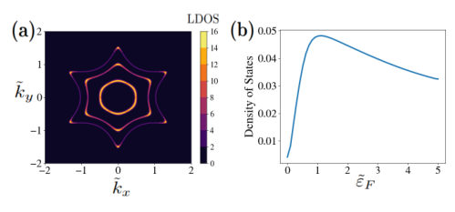
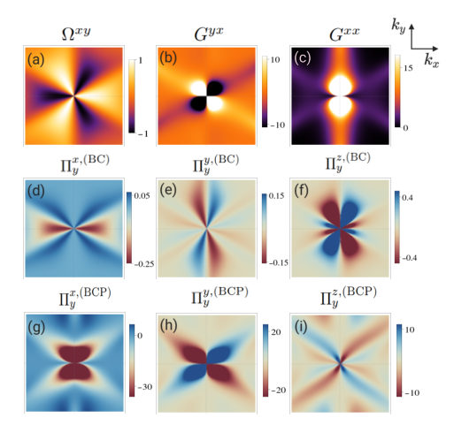
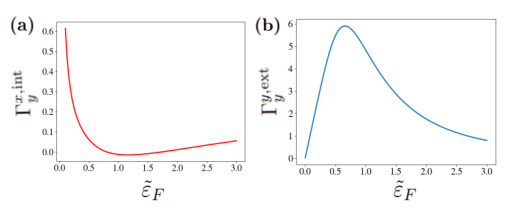
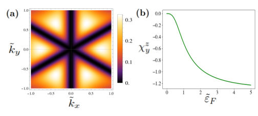
Summary. This paper theoretically analyzes pure spin currents in the surface states of topological insulators, focusing on the role of hexagonal warping. By extending linear response theory to the second order, the authors predict the existence of measurable intrinsic and extrinsic in-plane spin currents. This work is significant for spintronics as it provides a detailed understanding of non-linear spin transport mechanisms governed by crystal symmetry.
Why it may be interesting. This work provides a detailed theoretical framework for understanding higher-order transport phenomena in topological materials, which is crucial for designing next-generation spintronic devices that rely on non-linear spin manipulation.
Main problem. The work investigates both linear and non-linear pure spin currents generated in the surface states of topological insulators (TIs). It specifically addresses how hexagonal warping influences these transport phenomena.
Main result. The second-order response yields measurable intrinsic and extrinsic in-plane spin currents, which are distinct from the purely out-of-plane current found in linear response. The crystal symmetry dictates that only specific components of the spin conductivity tensor survive.
Method. The authors extend conserved spin transport formalism to the non-linear regime by using perturbation theory on Bloch states and solving the Boltzmann transport equation for the non-equilibrium distribution function.
Model / system. The system is modeled using the surface states of 3D TIs like Bi2Te3, incorporating an effective low-energy Hamiltonian that includes a hexagonal warping term. This warping provides a well-defined Berry curvature while preserving time-reversal symmetry.
Key observables. Pure spin current (both linear and second-order), Spin Hall Effect components ($\Xi^l_{ab}$), Intrinsic and Extrinsic Second-Order Spin Conductivity (SOSC) components ($\Gamma^l_{ ext{int}}, \Gamma^l_{ ext{ext}}$).
Important parameters / regimes. Hexagonal warping strength ($\lambda$), Fermi energy ($E_F$ or $k_F$), and the relaxation time approximation ($ au$).
Assumptions / limitations. The analysis relies on extending the formalism to second-order in the electric field, using perturbation theory for eigenstates, and employing the relaxation time approximation in the Boltzmann equation.
Figures summary. Figures illustrate Fermi contours showing hexagonal warping distortion, momentum space distributions of Berry curvature and SOSC components, and plots detailing how spin conductivity varies with Fermi energy.
Paper structure. The paper progresses from establishing the linear response (purely out-of-plane current) to motivating the non-linear extension. It then derives second-order terms involving BCP and BC dipoles, calculates the total spin current via the Boltzmann equation, and finally analyzes the symmetry constraints imposed by the material's crystal structure.
Spin Hall effect is one of the primary sources of pure spin current in spintronic devices, observed in spin-orbit coupled materials. In this work, we investigate linear and non-linear pure spin currents in the hexagonally warped surface states of topological insulators like $\rm Bi_2Te_3$, using the formalism of conserved spin transport. The hexagonal warping effect enables the application of this formalism by providing a well-defined Berry curvature without breaking the time-reversal symmetry. The absence of in-plane spin currents in the linear response motivates the extension of the formalism to the non-linear regime, by combining the perturbation of Bloch states with the Boltzmann transport equation. The second-order response exhibits both intrinsic and extrinsic in-plane spin currents induced by the spin-weighted Berry curvature, Berry connection polarizability (BCP) dipole and Berry curvature dipole (BCD) respectively. The band anisotropy due to the $C_{3v}$ symmetry of the material ($\rm Bi_2Te_3$) propagates through the spin textures and the band geometric quantities, resulting in the selection of certain components of the spin conductivity tensors.
Authors: Vladimir N. Mantsevich, Igor S. Krivenko, Dmitry S. Smirnov
Type: theory · Category: other · PDF: https://arxiv.org/pdf/2608.02241v1
Analysis basis: full PDF text, analyzed in chunks
Topic relevance: exotic spin models in light-matter 3/5 · spintronics-quantum-optics interface 3/5 · Keldysh / 2PI / non-Gaussian methods 1/5 · analog quantum simulation 1/5 · driven-dissipative phase transition 1/5 · methods for driven-dissipative 1/5 · non-equilibrium dynamics 1/5
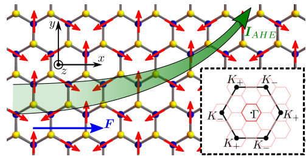
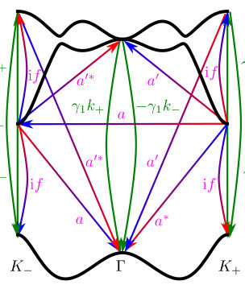
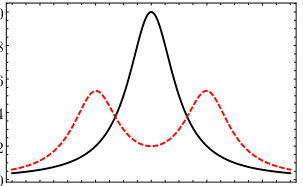
Summary. This paper theoretically examines how coupling a TMD monolayer to a chiral antiferromagnet alters its electronic and optical behavior. Using an effective $k\cdot p$ model, the authors predict measurable effects like the Anomalous Hall Effect and exciton resonance splitting. These predictions allow for potential experimental detection via magneto-optical measurements of the magnetization orientation.
Why it may be interesting. This work connects magnetism, topology (Berry curvature), and low-dimensional materials physics, providing theoretical tools for understanding emergent quantum phenomena in hybrid systems.
Main problem. The study investigates how proximity effects from a chiral $120^\circ$ Néel magnetic structure modify the transport and optical properties of Transition Metal Dichalcogenide (TMD) monolayers.
Main result. The proximity effect induces an Anomalous Antiferromagnetic Hall Effect (AHE) and causes splitting/mixing of exciton resonances, even in the absence of net magnetization.
Method. The authors developed an effective $k\cdot p$ model derived from a six-band tight binding approach to calculate transport coefficients and optical transition matrix elements.
Model / system. The system is a TMD ML coupled to a chiral magnet, modeled using an effective Hamiltonian that incorporates exchange interaction, spin-orbit coupling, and symmetry-breaking terms. The analysis focuses on the electronic structure near $K_{\pm}$ and $\Gamma$ points.
Key observables. Anomalous Antiferromagnetic Hall Effect (AHE) conductivity ($\sigma_{xy}$), splitting of exciton resonances, Faraday rotation ($ heta_F$), and ellipticity ($ heta_E$).
Important parameters / regimes. The dependence on the magnetization orientation angle $\varphi$ via a $\cos 3\varphi$ term is crucial for diagnostics.
Assumptions / limitations. The magnetic layer interaction is treated perturbatively to derive the effective $k\cdot p$ model, and certain exchange interactions are neglected for simplification.
Figures summary. Figures illustrate the Brillouin zone folding due to magnetism, energy dispersion curves for pristine TMD bands, and theoretical predictions for magneto-optical responses.
Paper structure. The paper progresses from defining the physical system and Hamiltonian (tight binding $ ightarrow k\cdot p$ model) to calculating transport properties (AHE via Berry curvature) and finally analyzing optical response (exciton splitting and polarization measurements).
We consider the proximity effects of a commensurate chiral $120^{\circ}$ Néel magnetic structure on the transport and optical properties of a transition metal dichalcogenide monolayer (TMD ML). The enlarged magnetic unit cell leads to the folding of the Brillouin zone and enables efficient intervalley spin-flip scattering. Starting from a six band tight binding model, we develop an effective $k\cdot p$ model, which describes the coupling between charge carriers in the TMD ML and the chiral magnetization. We predict the anomalous antiferromagnetic Hall effect (AHE) for conduction electrons and describe it accounting for the interplay between anomalous velocity, side jump, and skew scattering contributions. The proximity of the chiral magnetization also leads to the mixing and splitting of the exciton resonances in the two valleys which are related by the time reversal symmetry despite zero net magnetization. Finally, we demonstrate the possibility to measure the distribution of in-plane orientation of the chiral magnetization through Faraday rotation and the ellipticity of incident linearly polarized light.
Authors: Roberto Rosati, Mohammed Adel Aly Nouh, Robert Schmidt, Rudolf Bratschitsch, Ermin Malic
Type: both · Category: other · PDF: https://arxiv.org/pdf/2608.02513v1
Analysis basis: full PDF text, analyzed in chunks
Topic relevance: methods for driven-dissipative 3/5 · non-equilibrium dynamics 3/5 · Keldysh / 2PI / non-Gaussian methods 1/5 · analog quantum simulation 1/5 · correlated / nonlocal dissipation 1/5 · driven-dissipative phase transition 1/5 · non-equilibrium universality 1/5
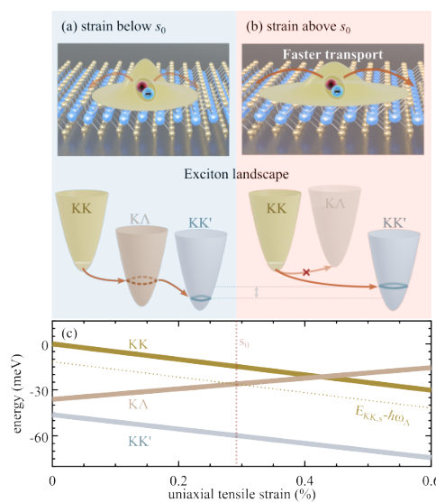
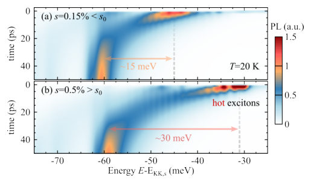
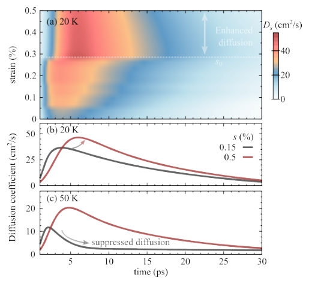
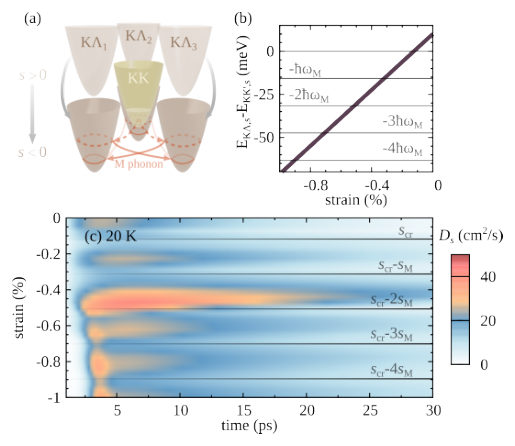
Summary. This research demonstrates that strain engineering offers a powerful tool to control exciton dynamics in WSe2 monolayers. By applying tensile or compressive strain, researchers can modify the energy landscape and suppress specific phonon scattering channels. This manipulation results in an abrupt enhancement of hot dark exciton excess energy and significantly accelerates transient exciton diffusion, paving the way for tailored 2D semiconductor devices.
Why it may be interesting. This work provides quantitative rules for manipulating quantum transport properties (exciton diffusion) in 2D materials by external mechanical fields (strain), which is highly relevant to designing next-generation optoelectronic devices.
Main problem. The study investigates how strain engineering can precisely control the transient exciton diffusion and energy landscape within WSe2 monolayers at cryogenic temperatures.
Main result. Tensile strain above a critical threshold ($s > s_0$) abruptly increases hot dark exciton excess energy, leading to an accelerated transient diffusion coefficient. Compressive strain is predicted to induce periodic modulation of this diffusion via M-phonon emission.
Method. The work combines theoretical modeling using master equations for excitonic dynamics with experimental measurements of time- and energy-resolved photoluminescence (PL) spectroscopy under controlled uniaxial strain.
Model / system. The physical system is WSe2 monolayers encapsulated by hBN, focusing on the interplay between bright and dark exciton states. The dynamics are modeled using an excitonic intravalley Wigner function governed by a master equation that includes spatial evolution, radiative losses, and strain-dependent exciton-phonon scattering terms.
Key observables. Transient PL spectrum ($I_s(E, \mathbf{r}, t)$), effective diffusion coefficient $D_s(t)$, and the excess energy of hot excitons ($\langle E_s angle_t$).
Important parameters / regimes. Strain magnitude ($s$), critical strain threshold ($s_0 \approx 0.3\%$), cryogenic temperatures (20 K, 50 K), and phonon energies (M phonons).
Assumptions / limitations. The analysis focuses on the lowest 1s states of specific exciton complexes ($ ext{KK}$, $ ext{K}\Lambda$, $ ext{KK}'$) and uses a Markov approach for scattering dynamics.
Figures summary. Figures illustrate how tensile strain causes spectral reordering, leading to faster transport by deactivating certain scattering channels; another figure shows the abrupt enhancement of $D_s(t)$ above $s_0$ with temperature dependence.
Paper structure. The paper systematically analyzes the effect of strain on exciton energy levels (via Wannier equations), models the resulting changes in scattering rates using a master equation, and quantifies the impact on measurable observables like PL spectra shifts and diffusion coefficients ($D_s(t)$).
Tungsten-based transition metal dichalcogenides exhibit dark excitons as the energetically lowest states. These are crucial for exciton thermalization and propagation and they dominate low-temperature photoluminescence via the emergence of pronounced phonon sidebands. After a resonant excitation, highly mobile hot dark excitons are formed, which quickly thermalize into an equilibrium distribution. The application of strain modifies the exciton energy landscape and, in particular, the relative energy separation between bright and dark exciton states. The impact of strain on the transient photoluminescence and diffusion of non-equilibrium excitons has remained largely unexplored so far. In this work, we investigate the spatiotemporal exciton dynamics in strained hBN-encapsulated WSe2 monolayers at cryogenic temperatures. We demonstrate that tensile strain abruptly increases the excess energy of hot excitons, thereby accelerating their transient diffusion. We trace this back to suppressed phonon-mediated scattering from bright to dark excitons. Furthermore, we predict a periodic modulation of the transient exciton diffusion in the presence of a compressive strain resulting from strain-driven emission of M phonons. The gained microscopic insights illustrate how strain can be used to engineer transient photoluminescence and exciton diffusion in technologically promising 2D semiconductors.
Authors: Lukas Gehrig, Cedric Schmitt, Erica Fragomeni, Simone Sotgiu, Stefan Enzner, Tommaso Venanzi, Bing Liu, Kilian Strauß, Jonas Erhardt, Martin Kamp, Elena Stellino, Paolo Postorino, Jörg Schäfer, Simon Moser, Christoph Stampfer, Giorgio Sangiovanni, Ralph Claessen, Leonetta Baldassarre
Type: both · Category: other · PDF: https://arxiv.org/pdf/2608.01961v1
Analysis basis: full PDF text, analyzed in chunks
Topic relevance: exotic spin models in light-matter 3/5 · spintronics-quantum-optics interface 3/5 · Keldysh / 2PI / non-Gaussian methods 1/5 · driven-dissipative phase transition 1/5 · interference shaping light 1/5 · methods for driven-dissipative 1/5
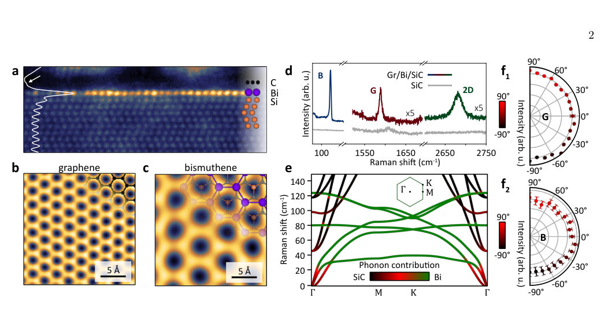
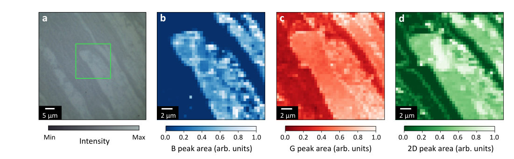
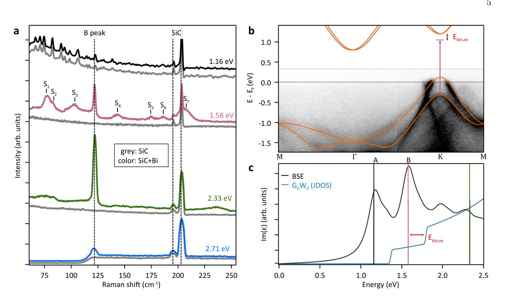
Summary. This work presents a novel, ambient-condition Raman characterization technique for graphene-protected bismuthene monolayers. By tuning the excitation laser near the material's excitonic resonance, the researchers revealed intrinsic lattice dynamics and higher-order phonon modes previously inaccessible. This establishes Raman micro-spectroscopy as a powerful tool for probing delicate quantum materials.
Why it may be interesting. While focused on condensed matter spectroscopy, the study's emphasis on resonant enhancement mechanisms—where external energy tuning reveals hidden coupling strengths (exciton-phonon)—is highly relevant to understanding light-matter interaction in quantum systems.
Main problem. The primary challenge is developing reliable, ambient-condition characterization methods for highly sensitive two-dimensional quantum spin Hall insulators like bismuthene.
Main result. The study successfully characterizes graphene-capped bismuthene using ex situ Raman spectroscopy, identifying intrinsic phonon modes and demonstrating resonant enhancement effects linked to excitonic transitions.
Method. The research combines experimental techniques (spatially resolved, polarization-dependent Raman spectroscopy) with theoretical calculations (DFPT for phonons, BSE/GW for excitons).
Model / system. The system under study is a heterostructure: bismuthene monolayer encapsulated by graphene on an SiC substrate. Bismuthene acts as the quantum spin Hall insulator layer.
Key observables. Pronounced Raman scattering peaks (e.g., $122 ext{ cm}^{-1}$ for bismuthene), resonant enhancement of spectral features, and observation of interlayer breathing modes ($S1$).
Important parameters / regimes. Excitation energy tuned near the excitonic transition ($\sim 1.58 ext{ eV}$); high crystalline order (narrow FWHM $\approx 5 ext{ cm}^{-1}$).
Assumptions / limitations. The analysis assumes that resonant enhancement is governed by exciton-mediated scattering, and initial theoretical models neglect the weak van der Waals coupling of graphene.
Figures summary. Figures show STEM/STM confirmation of structure, Raman spectra mapping B, G, and 2D modes; phonon dispersion curves from DFPT; and absorption spectra showing A and B excitons.
Paper structure. The paper progresses by first establishing the structural feasibility (STEM/STM), then identifying intrinsic vibrational signatures via standard Raman measurements, and finally utilizing resonant excitation to probe higher-order, exciton-coupled scattering processes.
Two-dimensional quantum spin Hall insulators based on atomic monolayers offer a promising route toward dissipationless electronics, yet their practical use is often limited by environmental instability. Encapsulating the system with a graphene capping layer has been shown to be a reliable method to prevent oxidation and degradation. However, the confirmation of a successful encapsulation still relies on ultra-high vacuum techniques, that considerably slow the process. Here, we present an ex situ, rapid, nondestructive and spatially resolved Raman characterization of graphene-capped bismuthene, a honeycomb monolayer of Bi on SiC. A pronounced Raman scattering peak at around 122 cm-1 is identified as the E2g phonon of bismuthene, via a comparison with density functional perturbation theory calculations. We use excitation-energy and polarization-dependent Raman measurements to enable an unambiguous assignment of the spectral features. Tuning the excitation energy close to the excitonic transition in pristine bismuthene, we observe a strong enhancement of the Raman response and the emergence of additional scattering peaks. In this regime, higher-order phonon features, as well as interfacial modes between bismuthene and the SiC substrate, become visible, suggesting the involvement of resonant scattering processes. Our results establish Raman micro-spectroscopy as a versatile tool for probing graphene-protected quantum materials, providing access to lattice dynamics and interlayer coupling.
Authors: J. B. Sokoloff
Type: both · Category: other · PDF: https://arxiv.org/pdf/2608.00211v1
Analysis basis: full PDF text, analyzed in chunks
Topic relevance: non-equilibrium dynamics 3/5 · Keldysh / 2PI / non-Gaussian methods 2/5 · correlated / nonlocal dissipation 1/5 · driven-dissipative phase transition 1/5 · methods for driven-dissipative 1/5 · non-equilibrium universality 1/5
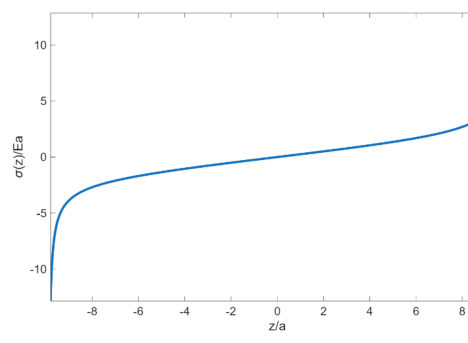
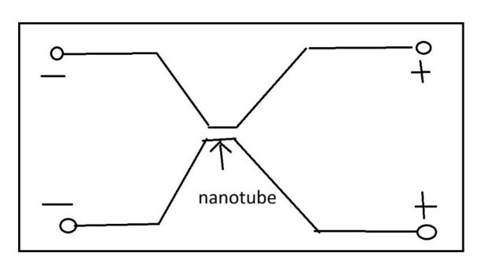
Summary. This paper investigates the discrepancy in ionic conductivity measurements between metallic and semiconducting carbon nanotubes under an electric field. The authors propose that the difference stems from how quickly each tube type reaches an equipotential state; semiconductors retain a persistent internal electric field longer than metals, driving higher measured ion flow rates.
Why it may be interesting. It provides a detailed physical mechanism connecting electronic structure (semiconductor vs. metal) to macroscopic transport properties (ionic conductivity) via transient electrostatics, which is relevant for understanding open quantum systems dynamics in nanoscale devices.
Main problem. The study aims to elucidate how electronic degrees of freedom influence ion transport properties (ionic conductivity) in carbon nanotubes, reconciling conflicting experimental observations.
Main result. The difference in ionic conductivity between metallic and semiconducting CNTs for long tubes is attributed to the time scale required for the internal electric field to dissipate; semiconductors retain a measurable internal field longer than metals.
Method. The authors combine theoretical derivations based on quantum mechanical models (calculating electron concentrations and charge) with analysis of experimental measurements concerning ion flow rates under applied fields.
Model / system. The system involves metallic and semiconducting carbon nanotubes subjected to an external electric field, where ion transport ($ ext{K}^+$) is measured. The theory models the time evolution of surface charge distribution on the nanotube walls.
Key observables. Ionic conductivity, $ ext{K}^+$ flow rates, internal electric field strength ($E$), and characteristic time scales ($ au_t$).
Important parameters / regimes. Nanotube diameter (2.6-5.4 nm), length (100 $\mu$m vs 11 nm), applied electric field, and electronic parameters like band gap ($g$) and Fermi level ($E_F$).
Assumptions / limitations. The analysis relies on comparing different time scales: short tubes reach equipotential quickly, while long semiconducting tubes maintain a significant internal field for extended periods.
Figures summary. Figure 1 illustrates the electronic charge distribution on metallic nanotubes; Figure 2 sketches the experimental setup used in related literature (Ref. [11]).
Paper structure. The paper reviews conflicting literature results regarding ion flow rates, develops a theoretical framework based on charge relaxation times ($ au_t$), and uses this time scale difference to explain why semiconducting tubes exhibit higher conductivity than metallic ones under certain measurement conditions.
Measurements made by Li, et. al., showed that the flow rates of potassium ions through 11nm long, subnanometer diameter, metallic and semiconducting carbon nanotubes under an applied electric field are almost the same. In contrast, measurements of the electrical conductivity of potassium chloride solution through 100 long metallic and semiconducting carbon nanotubes with diameters between 2.6-5.4nm by Cui, et. al., show that the ionic conductivity in the semiconducting nanotubes is larger than that of the metallic nanotubes. Possible theoretical origins of these differences are explored in this article.
Authors: Jason G. Kattan, T. Pereg-Barnea
Type: theory · Category: strongly correlated electrons · PDF: https://arxiv.org/pdf/2608.00338v1
Analysis basis: full PDF text, analyzed in chunks
Topic relevance: Keldysh / 2PI / non-Gaussian methods 3/5 · analog quantum simulation 1/5 · correlated / nonlocal dissipation 1/5 · driven-dissipative phase transition 1/5 · methods for driven-dissipative 1/5
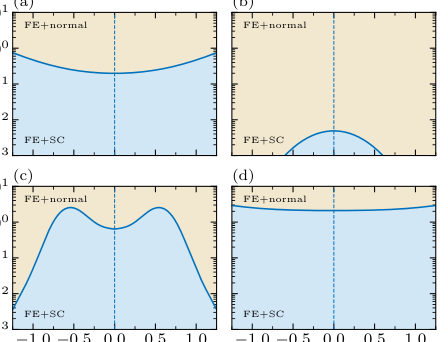
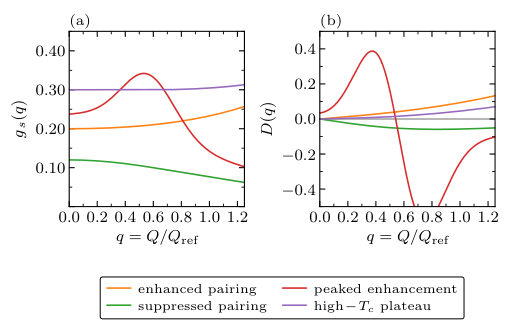
Summary. This theoretical work develops a formalism to study how ferroelectricity and superconductivity can coexist in noncentrosymmetric metals. By treating polarization fluctuations as an effective attractive interaction, the authors derive conditions under which these lattice distortions drive electron pairing, extending BCS theory into polar materials.
Why it may be interesting. While focused on condensed matter pairing mechanisms, the treatment of fluctuating order parameters (polarization) mediating interactions is relevant to open quantum systems where environmental coupling drives collective excitations and emergent correlations.
Main problem. The work investigates the fundamental physical problem of how superconductivity can coexist with, or even emerge from, ferroelectric ordering in noncentrosymmetric metals.
Main result. Superconductivity can be induced by attractive electron-electron interactions mediated by polarization fluctuations, leading to a BCS-type pairing mechanism analogous to phonon mediation.
Method. The authors employ a microscopic field-theoretic approach, deriving an effective Hamiltonian by integrating out ionic degrees of freedom (phonons) from the coupled electron-ion system.
Model / system. The model is a coupled electron-ion system described by a general Hamiltonian incorporating electronic operators and ionic position/momentum operators. The analysis proceeds via normal mode quantization of the ion subsystem, leading to an effective attractive interaction term for electrons.
Key observables. Superconducting critical temperature ($T_c$), superconducting gap ($\Delta$), spontaneous polarization, and the BCS-type gap equation.
Important parameters / regimes. The strength of the phonon-mediated attraction relative to Coulomb repulsion; parameters governing ferroelectric order (e.g., displacement magnitude).
Assumptions / limitations. Significant approximations are made, including reducing the model to a single relevant band and neglecting odd-order anharmonic couplings in the ion dynamics expansion.
Figures summary. The paper illustrates four representative qualitative regimes of pairing enhancement/suppression based on varying coupling strengths and polar dependencies (e.g., enhanced vs. suppressed pairing).
Paper structure. The structure moves from defining a general microscopic Hamiltonian for coupled electron-ion dynamics, through normal mode analysis of the ionic subsystem, to deriving simplified BCS gap equations that quantify the conditions for ferroelectric superconductivity.
It has recently been shown in experiments that certain materials can display both superconductivity and ferroelectricity, contrary to a long-standing conjecture that these two phenomena are incompatible, or at least unrelated. In this work we study superconductivity in ferroelectric metals, using a formalism of ionic polarization fields coupled to itinerant electrons, both of which are treated at the microscopic level. The ferroelectric order manifests as a spontaneous polarization that may be uniform or spatially modulated, and fluctuations of the polarization mediate interactions between the electrons. The polarization fluctuations give rise to attractive interactions that can lead to Cooper pairing in certain lattice configurations, analogous to the nonpolar phonons in conventional BCS theory. Working with a simplified BCS model, we derive conditions under which superconductivity can coexist with and even emerge from ferroelectricity.
Authors: Chi-Ken Lu
Type: theory · Category: other · PDF: https://arxiv.org/pdf/2608.00226v1
Analysis basis: full PDF text, analyzed in chunks
Topic relevance: Keldysh / 2PI / non-Gaussian methods 3/5 · methods for driven-dissipative 1/5 · non-equilibrium dynamics 1/5
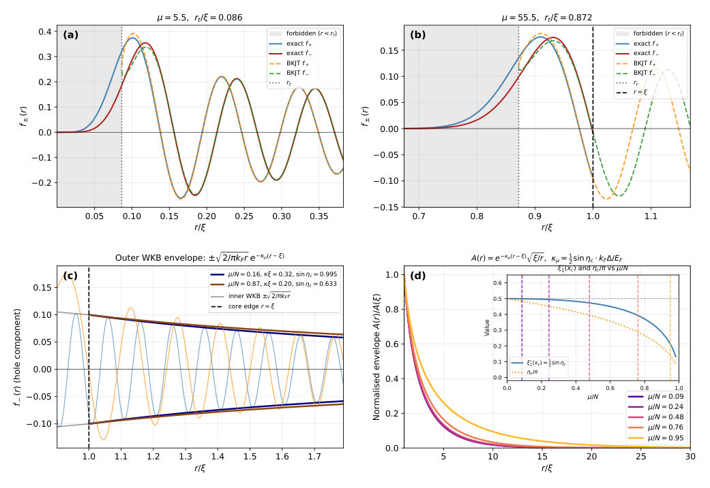
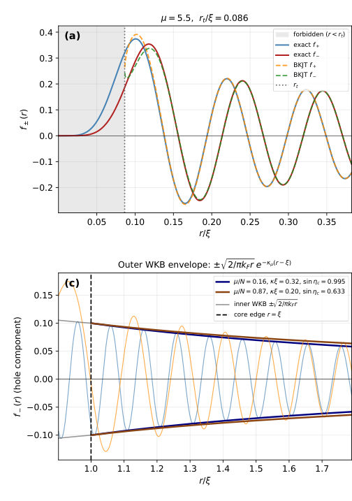
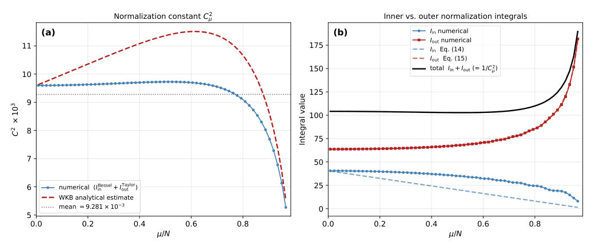
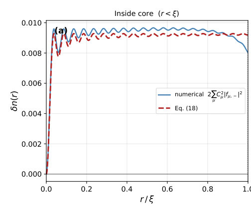
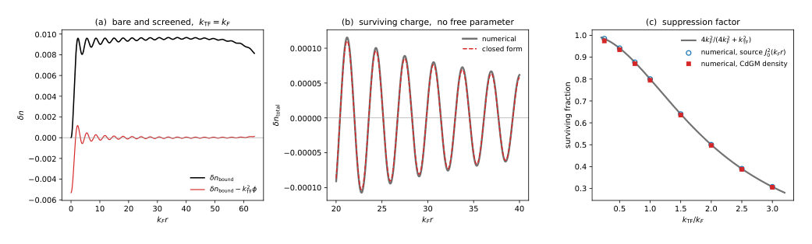
Summary. This paper analytically determines the charge density profile inside a superconducting vortex core by simplifying the Bogoliubov–de Gennes equations. It shows that while the bound states create local modulations, global charge neutrality forces extended states to compensate this charge. The final result is a persistent, sign-alternating ripple modulation dictated by screening inefficiency at large momentum transfers.
Why it may be interesting. While focused on superconductivity, the rigorous mathematical techniques developed for solving the screened Poisson equation ($ abla^2 - k_{TF}^2$) using complex envelopes and separation of variables are highly valuable tools applicable to analyzing charge screening in other quantum many-body systems or interfaces.
Main problem. To provide an elementary analytical account of the charge density profile within a superconducting vortex core, specifically addressing the sign change and residual modulation observed in self-consistent calculations.
Main result. The bound-state charge does not integrate to zero; neutrality requires extended states to compensate it exactly, leaving a persistent, sign-alternating $2k_F$ modulation outside the core.
Method. Analytical derivation using the slow-mode ansatz applied to Bogoliubov–de Gennes equations, followed by solving the screened Poisson equation using advanced mathematical techniques like separation of variables and 'replacement tricks'.
Model / system. The system is a weak-coupling s-wave superconductor containing a single vortex line. The physics is governed by quasiparticle bound states derived from Bogoliubov–de Gennes (BdG) equations, analyzed using a step-like gap profile.
Key observables. Charge density profile $\delta n(r)$, potential $\phi(r)$, and the residual $2k_F$ modulation amplitude.
Important parameters / regimes. Fermi wavevector ($k_F$), coherence length ($\xi$), Fermi momentum ($E_F$), and the ratio of superconducting gap to Fermi energy ($\Delta_\infty/E_F$).
Assumptions / limitations. The analysis relies on approximating the normalization constant as weakly dependent on angular momentum, and later uses 'replacement tricks' or separation of variables which are shown to fail near boundaries.
Figures summary. Figures compare exact Bessel solutions to approximations for mode normalization; another figure compares numerical vs. analytical solutions for a screened potential source using different mathematical techniques.
Paper structure. The paper first derives the in-core density profile analytically using simplified BdG sums, then tackles the screening problem by solving the Poisson equation, comparing several approximation methods (like the replacement trick) against exact solutions to validate the final result regarding residual oscillations.
Self-consistent Bogoliubov-de Gennes calculations have long shown that solving the Poisson equation inside a superconducting vortex turns a one-signed charge depletion into a modulation that alternates in sign with period $π/k_F$. We give an elementary account of that result. Taking the Caroli-de Gennes-Matricon bound states in a step-like gap, we show that the normalization of the bound-state spinor is nearly independent of angular momentum, which collapses the mode sum into closed form. Inside the core the vortex winding removes one Bessel channel from a completeness sum, so the density vanishes on the vortex line and carries Friedel-like oscillations of wavevector $2k_F$; outside it the sum gives a $1/r$ envelope decaying over a coherence length, with a residual ripple. The bound-state charge does not integrate to zero, so neutrality obliges the extended states to compensate it exactly. That compensation is complete at long wavelength but fails at the diameter of the Fermi circle, and what survives is a sign-alternating $2k_F$ modulation reduced only by $4k_F^2/(4k_F^2+k_{TF}^2)$, a factor lying between one-half and three-quarters for any metal. The oscillation is therefore not a delicate effect but a consequence of neutrality and the inefficiency of screening at large momentum transfer: in the screened total the smooth terms cancel and only the ripple is left.
Authors: Meysam Bagheri Tagani Carmine Autieri, Wojciech Brzezicki
Type: theory · Category: other · PDF: https://arxiv.org/pdf/2608.02155v1
Analysis basis: full PDF text, analyzed in chunks
Topic relevance: spintronics-quantum-optics interface 3/5




Summary. The paper develops a tight-binding model for 2D d-wave altermagnets to study their magneto-optical response. It shows that the interplay of different spin-orbit coupling mechanisms—particularly staggered components—is necessary to break symmetries, generate Berry curvature hot spots, and induce measurable optical Hall effects or even a Chern insulator phase. This work highlights how subtle structural couplings can dictate macroscopic electronic properties in compensated magnets.
Why it may be interesting. This work provides a detailed theoretical framework for understanding how engineered interfacial couplings (SOC) can induce exotic electronic properties like quantized Hall states or large optical responses in magnetically ordered materials without requiring net ferromagnetism, which is highly relevant for spintronics and topological materials research.
Main problem. The study investigates how distinct spin-orbit coupling (SOC) mechanisms control band topology and magneto-optical response in two-dimensional d-wave altermagnets that lack a net ferromagnetic moment.
Main result. The combination of staggered SOC terms is crucial for generating finite Berry curvature, optical Hall conductivity, and potentially realizing a Chern insulator phase, even when the system remains topologically trivial in certain limits.
Method. Theoretical analysis using a four-band tight-binding model solved via covariant-velocity Kubo calculations to determine frequency-dependent transport properties.
Model / system. The physical system is a 2D d-wave altermagnet modeled on a Lieb lattice structure, described by a periodic four-band Hamiltonian incorporating hopping terms and three distinct SOC channels: uniform Rashba, sublattice-staggered Rashba, and bond-staggered SOC.
Key observables. Optical Hall conductivity ($\sigma_{xy}$), circular dichroism, Chern number ($C$), and DC/resonant Hall responses.
Important parameters / regimes. SOC strengths (lambda_R, lambda_s, lambda_b), carrier doping level (chemical potential $\mu$), and magnetic order parameter $M$.
Assumptions / limitations. The analysis assumes a collinear Néel vector configuration and relies on the tight-binding approximation; it distinguishes between topological quantization (Chern insulator) and large optical responses in trivial states.
Figures summary. Figures illustrate spin-resolved band structures along high-symmetry lines, showing the evolution of Dirac points and nodal gaps as SOC parameters are varied.
Paper structure. The paper develops the Hamiltonian incorporating various SOC terms, analyzes how each term breaks symmetries (e.g., sublattice-staggered Rashba breaking antiunitary symmetry), calculates topological invariants like the Chern number, and finally uses Kubo formalism to predict measurable magneto-optical responses under doping.
Altermagnets combine compensated collinear magnetic order with momentum-dependent spin splitting, providing a route to transverse electronic and optical responses without a net ferromagnetic moment. We develop a strictly periodic four-band tight-binding model for a two-dimensional d-wave altermagnet and distinguish the roles of three spin orbit coupling (SOC) channels: uniform Rashba SOC, a sublattice-staggered Rashba interaction, and bond-staggered SOC. In the absence of SOC, the d-wave kinetic anisotropy produces spin-polarized Dirac points on orthogonal Brillouin-zone boundaries, related by the altermagnetic fourfold spin-group symmetry. Uniform Rashba SOC mixes the spin sectors and shifts these nodes but preserves the antiunitary symmetry that forbids an integrated Hall response. The sublattice-staggered Rashba term breaks this symmetry and activates transverse optical response, whereas the bond-staggered SOC provides the mass that gaps the boundary nodes. Their combined action generates strong Berry-curvature hot spots and, within a narrow parameter window, an isolated lower two-band manifold with Chern number C=-2. For the representative parameters considered here it is possible to stabilize a Chern insulator phase. Using covariant-velocity Kubo calculations, we show that large optical Hall conductivity and circular dichroism extend well beyond the nonzero-Chern region and are controlled by SOC-induced avoided crossings and symmetry breaking. We further find that carrier doping strongly modifies the resonant and dc Hall responses through Pauli blocking and the occupation of Berry-curvature hot spots, enabling gate-controlled sign reversals. These results identify the complementary roles of distinct interfacial SOC mechanisms in producing topology and tunable magneto-optical activity in compensated two-dimensional magnets.
Authors: Muchen Dong, Lei Wang
Type: theory · Category: other · PDF: https://arxiv.org/pdf/2608.00570v1
Analysis basis: full PDF text, analyzed in chunks
Topic relevance: driven-dissipative phase transition 2/5 · non-equilibrium dynamics 2/5 · non-equilibrium universality 2/5 · Frenkel-Kontorova 1/5 · Keldysh / 2PI / non-Gaussian methods 1/5 · analog quantum simulation 1/5 · correlated / nonlocal dissipation 1/5 · entanglement & information structure 1/5 · methods for driven-dissipative 1/5 · scars & prethermalization 1/5
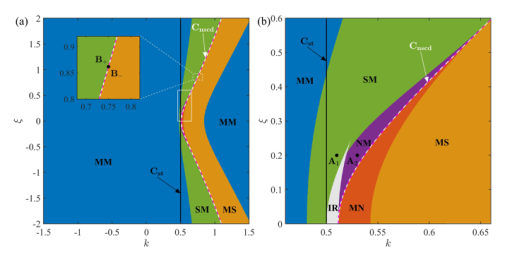
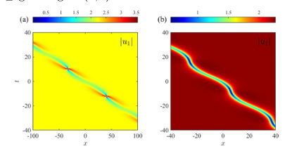
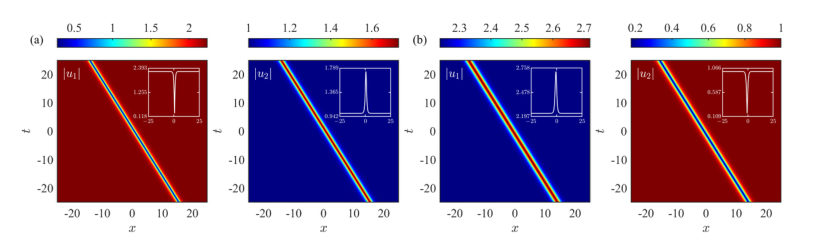
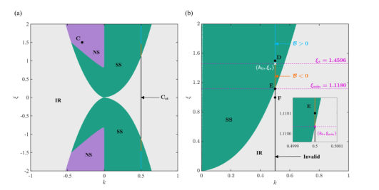
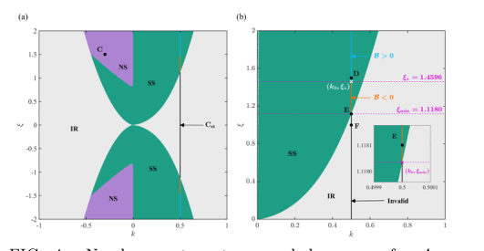
Summary. This paper analyzes how vector Kuznetsov-Ma breathers undergo state transitions within a coupled Fokas-Lenells model. It identifies two key mechanisms: a discontinuous jump in the degenerate regime and a direct conversion to solitons when background frequencies match. The work uses advanced mathematical techniques to map out these transition boundaries.
Why it may be interesting. While focused on nonlinear PDEs, the study of stable/unstable localized structures, symmetry breaking, and transition dynamics shares conceptual overlap with understanding excitation modes in complex quantum systems or optical lattices.
Main problem. The study investigates the mechanisms governing state transitions for vector Kuznetsov-Ma breathers (KMBs) within the coupled Fokas-Lenells framework.
Main result. Two distinct transition mechanisms are found: a discontinuous KMB-to-soliton jump in the degenerate sector, and a direct conversion to single/two-soliton states when background plane waves become frequency matched in the nondegenerate sector.
Method. The analysis employs theoretical techniques including Darboux transformations and spectral eigenvalue calculations, supplemented by numerical excitation for verification.
Model / system. The system is modeled by vector KMBs governed by a dimensionless Coupled Fokas-Lenells (CFL) system on unequal backgrounds. This framework incorporates intrinsic space–time coupling effects.
Key observables. Breather morphology, the existence and nature of limiting solitons (dark–antidark states), and the transition threshold parameters.
Important parameters / regimes. The background imbalance ($R eq 0$), which breaks spectral reflection symmetry; the specific curves defining degeneration ($C_{nscd}$) and frequency matching ($C_{st}$).
Assumptions / limitations. The analysis is confined to the CFL system, and certain limiting procedures (like one-fold Darboux transformations) are utilized to characterize transitions.
Figures summary. Figures illustrate KMB morphology maps showing transition curves ($C_{st}, C_{nscd}$), and visualize the resulting dark–antidark or multi-soliton states in different regimes.
Paper structure. The paper systematically analyzes the state transitions by first examining the degenerate sector (leading to discontinuous jumps) and then analyzing the nondegenerate sector (where frequency matching causes direct soliton conversion). Special attention is paid to limiting behavior on self-conjugate curves.
We study two types of mechanisms of state transitions for vector Kuznetsov-Ma breathers (KMBs) in the coupled Fokas-Lenells framework on unequal backgrounds. The amplitude imbalance breaks spectral reflection symmetry and generates richer breather morphologies. In the degenerate sector, KMBs approaching a non-self-conjugate degeneration curve from opposite sides yield different limiting solitons, revealing a discontinuous KMB-to-soliton transition. In the nondegenerate sector, the background plane waves become frequency matched at a special wavenumber, converting the KMB into a single- or two-soliton state. We determine the exact transition threshold and characterize how nearby solutions vary with the parameter. We further investigate special limiting mechanisms arising on the self-conjugate degeneration curve and on the real spectrum at the state-transition wavenumber. Numerical excitation provides further evidence for these results.
Authors: Kin Hung Fung, C. T. Chan
Type: theory · Category: other · PDF: https://arxiv.org/pdf/2608.01520v1
Analysis basis: full PDF text, analyzed in chunks
Topic relevance: driven-dissipative phase transition 2/5 · Frenkel-Kontorova 1/5 · analog quantum simulation 1/5 · correlated / nonlocal dissipation 1/5 · methods for driven-dissipative 1/5 · non-equilibrium dynamics 1/5 · non-equilibrium universality 1/5
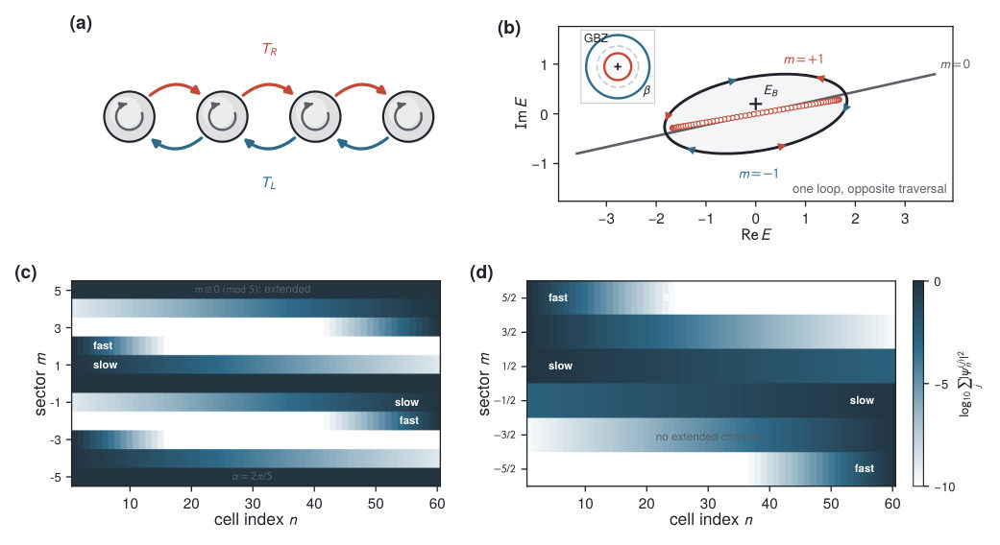
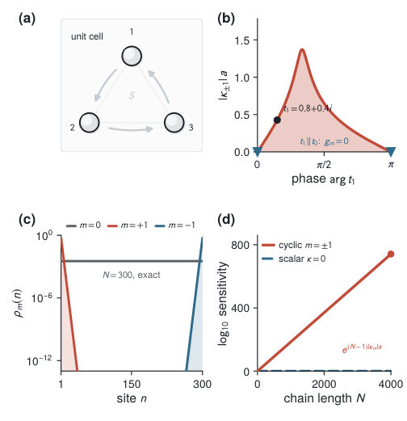
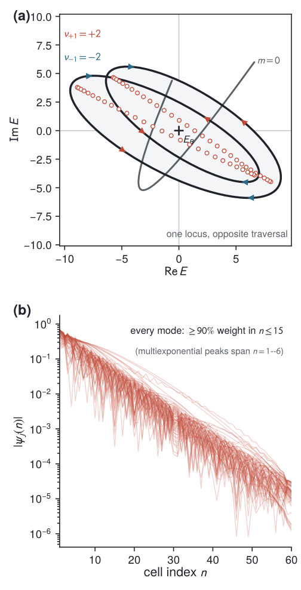
Summary. This work introduces the 'reciprocal skin effect' in lattice models by incorporating an internal conserved angular momentum (internal rotation). This mechanism generates a rich, graded topological invariant ($\mathbb{Z}_q$) that dictates directional localization while maintaining overall Hamiltonian reciprocity. The findings provide a powerful theoretical tool for designing quantum systems with controlled, symmetry-protected transport properties.
Why it may be interesting. The concept of a 'reciprocal skin effect' protected by internal symmetry is a sophisticated extension of standard non-Hermitian physics, providing new topological invariants ($\mathbb{Z}_q$) beyond simple $\mathbb{Z}_2$ indices. This framework could apply to engineered quantum metamaterials or optical lattices.
Main problem. To construct a general mechanism where an internal, conserved compact angular momentum converts standard lattice couplings into a reciprocal non-Hermitian skin effect.
Main result. The system exhibits a graded topological invariant ($\mathbb{Z}_q$) protected by the internal rotation, leading to directional localization that is balanced between opposite boundaries (reciprocal skin effect).
Method. Theoretical analysis of lattice Hamiltonians involving rotational couplings, utilizing concepts from non-Hermitian topology and spectral theory.
Model / system. A class of lattices featuring an 'internal rotation'—a conserved compact angular momentum in each unit cell. The model is analyzed using a rotor chain Hamiltonian structure $H\psi = h_0(Jz) \psi + T_R \psi_{n+1} + T_L \psi_{n-1}$.
Key observables. Directional Imbalance Generator ($g_m$), Integer Grading ($\mathbb{Z}_q$) winding numbers, and the skin localization length ($\xi_m$).
Important parameters / regimes. The rotational parameter $\alpha$, spin quantum number $j$ (integer or half-integer), and coupling strengths ($t_0, t_1$).
Assumptions / limitations. The existence of a multi-mode internal space carrying a nontrivial rotation representation and the conservation of angular momentum $J_z$.
Figures summary. Figures illustrate the rotor chain structure, showing point-gap windings ($ u_{\pm 1}, u_0$) for specific $\alpha$ values (e.g., $\alpha=2\pi/3$), and visualizing spectral collapse and localization profiles.
Paper structure. The paper establishes the general mechanism via internal rotation leading to directional imbalance, derives the topological invariants ($\mathbb{Z}_q$), analyzes the behavior across different spin classes (integer vs. half-integer), and confirms realizations using specific lattices like the cyclic three-site model or passive lossy resonators.
We present a class of lattices in which an internal rotation---a conserved compact angular momentum in each unit cell---turns reciprocal couplings into a non-Hermitian skin effect. In each conserved channel, the rotation character makes the left- and right-going amplitudes unequal, so the channel localizes directionally while the full Hamiltonian remains reciprocal, with conjugate channels pinned to opposite boundaries. Every channel is exactly solvable and carries an integer point-gap winding: under exact channel conservation, the phases form $\Z^{q}$, with one integer per conjugate channel pair, $q$ unbounded across multiplets, and $q=j+\tfrac{1}{2}$ for half-integer spin $j$ in the symplectic class AII$^{\dagger}$. Mixing conjugate channels collapses the grading to a critical, scale-free skin effect, with only the odd AII$^{\dagger}$ $\Z_{2}$ parity surviving. A cyclic three-site lattice and a passive lossy resonator array realize the effect.
Authors: Lingxiao Zhao, Yi Zhao, Bangshuai Zhu, Qi Wang, Cuiying Pei, Juefei Wu, Jin-Ke Bao, Wen-He Jiao, Yanpeng Qi
Type: both · Category: disordered systems and neural networks · PDF: https://arxiv.org/pdf/2608.02342v1
Analysis basis: full PDF text, analyzed in chunks
Topic relevance: driven-dissipative phase transition 2/5 · Kondo & dissipative impurity 1/5 · analog quantum simulation 1/5 · methods for driven-dissipative 1/5 · non-equilibrium dynamics 1/5
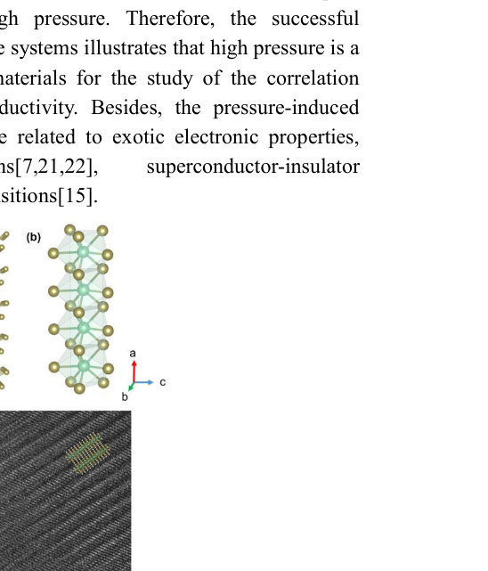
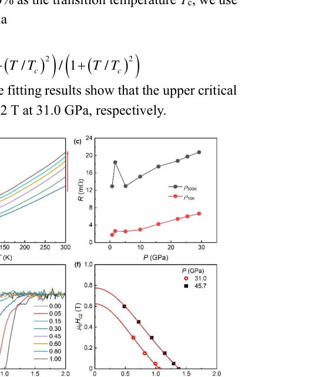
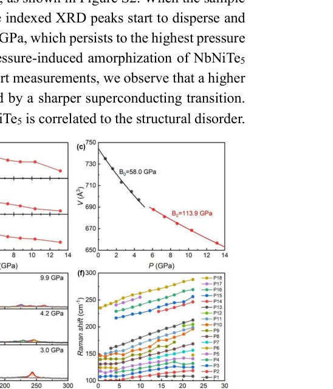
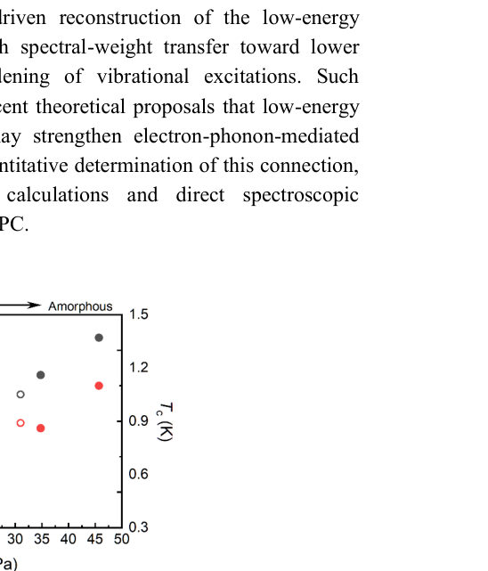
Summary. This work reports that applying high pressure causes the topological material $ ext{NbNiTe}_5$ to undergo amorphization, which coincides with the onset of superconductivity. Crucially, the superconducting critical temperature ($T_c$) is found to increase as the structural disorder increases during compression, suggesting disorder plays a key role in enhancing pairing mechanisms.
Why it may be interesting. While focused on condensed matter, the core mechanism—how controlled structural disorder enhances a quantum phenomenon like superconductivity—is highly relevant to understanding strongly correlated and disordered quantum systems.
Main problem. The study investigates the unusual relationship between pressure-induced structural disorder (amorphization) and the emergence/enhancement of superconductivity in a topological material.
Main result. Superconductivity emerges concurrently with amorphization around 10 GPa, and the superconducting transition temperature ($T_c$) progressively increases as the degree of structural disorder enhances up to 45.7 GPa.
Method. The research combines high-pressure electrical transport measurements, in-situ X-ray diffraction (XRD), Raman spectroscopy, and theoretical modeling (DFT) to track material changes under compression.
Model / system. The physical system is the topological transition metal chalcogenide $ ext{NbNiTe}_5$. The study examines its structural evolution from crystalline to amorphous states under extreme pressure.
Key observables. Superconducting Transition Temperature ($T_c$), normal state resistance, upper critical field ($\mu_0H_{c2}$), and lattice parameter changes observed via XRD/Raman.
Important parameters / regimes. Pressure (up to 45.7 GPa); temperature; structural disorder level.
Assumptions / limitations. The enhancement of $T_c$ is directly modulated by the degree of structural disorder induced by high pressure, suggesting a mechanism related to disorder-enhanced electron-phonon coupling.
Figures summary. Figures illustrate resistance evolution showing superconductivity onset; XRD/Raman spectra track lattice changes and amorphization; phase diagrams map $T_c$ vs. pressure alongside structural transitions.
Paper structure. The paper systematically presents evidence: initial normal state behavior $ ightarrow$ observation of structural transition (amorphization) $ ightarrow$ confirmation of superconductivity onset coinciding with disorder $ ightarrow$ quantitative measurement of $T_c$ enhancement across the disordered regime.
We have systematically studied the structural and electronic properties of a topological material NbNiTe5 under high pressure. The evolution of the normal state resistance shows a non-monotonic trend from 0.7 GPa to 5.1 GPa, in accordance with the second-order transition along the inter-layer direction observed in X-ray diffraction and Raman spectra. At around 10 GPa, the sample starts amorphization, which is concurrent with the emergence of superconductivity. Upon further compression, the structural disorder enhances and the superconducting transition becomes clearer, suggesting that the superconductivity is modulated by the degree of disorder in NbNiTe5 under high pressure. Within 45.7 GPa, the superconducting transition temperature (Tc) slowly rises from 0.6 K at 9.5 GPa to 1.4 K at 45.7 GPa. Our findings extend the family of transition metal chalcogenide superconductors and shed new light on understanding superconductivity in disordered systems.
Authors: Florian Simon, Thomas Bernat, Annica M. Black-Schaffer
Type: theory · Category: other · PDF: https://arxiv.org/pdf/2608.02434v1
Analysis basis: full PDF text, analyzed in chunks
Topic relevance: entanglement & information structure 2/5 · Keldysh / 2PI / non-Gaussian methods 1/5 · analog quantum simulation 1/5 · driven-dissipative phase transition 1/5
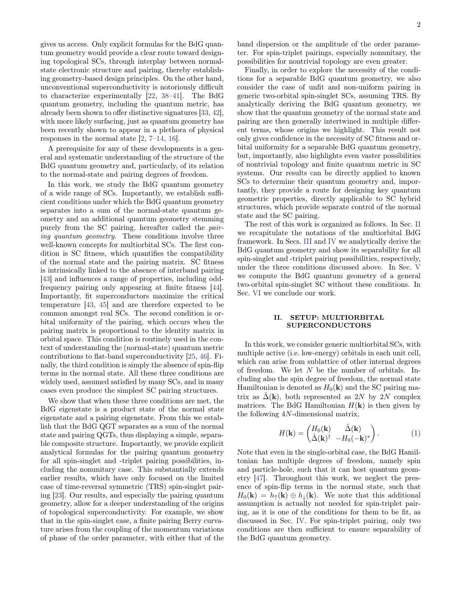
Summary. This paper analyzes the quantum geometry of superconducting states using the BdG Hamiltonian. It shows that under specific physical conditions, this complex geometry cleanly separates into contributions from the normal metal and the superconducting pairing itself. This provides powerful theoretical tools for designing or diagnosing superconductors with engineered topological properties.
Why it may be interesting. This work provides a rigorous geometric framework to diagnose unconventional superconductivity by quantifying how pairing interactions alone can generate topological features or finite quantum metrics, even when the normal state is trivial.
Main problem. The study investigates the quantum geometry of the superconducting state, defined by the Bogoliubov-de Gennes (BdG) Hamiltonian, to determine when this geometry can be decomposed into independent normal-state and pairing contributions.
Main result. Under specific conditions—superconducting fitness, orbital uniformity of pairing, and absence of normal-state spin-flip terms—the BdG quantum geometry cleanly separates into a sum of the normal-state and pairing quantum geometries.
Method. The authors use analytical derivations based on the BdG Hamiltonian formalism to calculate the Quantum Geometric Tensor (QGT) for various superconducting pairings (singlet and triplet).
Model / system. The system is superconductors modeled by the Bogoliubov-de Gennes (BdG) Hamiltonian, generalized to multiorbital structures. The analysis covers spin-singlet, spin-triplet, and nonunitary pairing states.
Key observables. The BdG quantum geometry, which includes both the quantum metric and Berry curvature; separability of this geometry into normal-state and pairing components.
Important parameters / regimes. Superconducting fitness ($\mathbf{F}(\mathbf{k})$), orbital uniformity of the superconducting pairing, and the nature of the pairing (spin-singlet vs. spin-triplet).
Assumptions / limitations. The clean separation of the quantum geometry requires meeting three general conditions: superconducting fitness, orbital uniformity of the pairing, and absence of normal-state spin-flip terms.
Paper structure. The paper establishes the multiorbital BdG framework, derives the separability results for various pairings under ideal conditions, examines non-separable cases where contributions intertwine, and concludes with design rules for engineered superconductors.
The interplay of superconductivity and the quantum geometry of the normal state has recently been the subject of an array of studies, especially regarding the superfluid weight. In this work, we turn our attention to the quantum geometry of the superconducting state itself, set by the Bogoliubov-de Gennes (BdG) Hamiltonian, which dictates the geometric and topological properties of superconductivity. We show that under three general conditions, namely superconducting fitness, orbital uniformity of the superconducting pairing, and absence of normal-state spin-flip terms, the BdG quantum geometry exactly separates into a sum of the normal-state quantum geometry and an additional pairing quantum geometry, thereby displaying a simple composite structure. We show that this separation holds for all spin-singlet and -triplet pairings, including nonunitary spin-triplet pairing. We further provide explicit analytical formulas for the pairing quantum geometry for all these cases. These results establish how superconducting pairing alone easily drives both topology and a finite quantum metric, thus being present even in topological trivial or flat band superconductors, with no normal state quantum geometry. To complement these results, we also derive the BdG quantum geometry of a general two-orbital spin-singlet superconductor with non-uniform pairing and finite superconducting fitness. Here, our explicit analytical results establish a non-separable composite BdG quantum geometry, with the normal state and pairing contributions generally intertwining, thereby producing even more possibilities for finite quantum geometry. Our results provide design rules for creating superconductors and superconducting hybrid structures with nontrivial topology and finite quantum metric and will additionally help in the experimental diagnosis of unconventional superconductivity.
Authors: Henok Weldeyesus, Taras Patlatiuk, Christian P. Scheller, Amir Yacoby, Loren N. Pfeiffer, Ken W. West, Dominik M. Zumbühl
Type: experiment · Category: other · PDF: https://arxiv.org/pdf/2608.02431v1
Analysis basis: full PDF text, analyzed in chunks
Topic relevance: spintronics-quantum-optics interface 2/5 · Kondo & dissipative impurity 1/5 · analog quantum simulation 1/5 · non-equilibrium dynamics 1/5
Summary. The research reports on observing fundamental single-particle quantum effects, such as ballistic interference and discrete energy quantization, in electron systems confined to one dimension over lengths approaching 18 $\mu$m. By using tunneling spectroscopy and comparing measurements with detailed simulations, the authors confirm that these structures behave as near-ideal 1D conductors. This work is significant for demonstrating the scalability of quantum coherence in solid-state devices.
Why it may be interesting. This work provides experimental evidence for coherent, ballistic quantum transport over micron scales, pushing the boundaries where simple single-particle quantum mechanics can be observed in solid-state devices, which is highly relevant for understanding mesoscopic physics and open quantum systems dynamics.
Main problem. The primary challenge addressed is observing fundamental quantum phenomena, such as ballistic interference and discrete energy levels, in electronic systems as they approach macroscopic physical sizes.
Main result. The authors successfully demonstrated the observation of single-particle quantum mechanics effects, including clear interference patterns up to 18 $\mu$m and resolved orbital/spin states in wires approaching macroscopic dimensions.
Method. Measurements involve tunneling spectroscopy between parallel quantum wires under varying magnetic fields and gate voltages, analyzed by comparing results with detailed single-particle numerical simulations.
Model / system. The system is a double quantum wire structure realized on GaAs/AlGaAs using cleaved edge overgrowth. The physics is modeled using the Schrödinger equation to describe electron wavefunctions and tunneling currents between segments defined by lithographically patterned gates.
Key observables. Intricate interference patterns in magnetic field and density, discrete orbital and spin energy levels (Coulomb charging energies), and characteristic oscillation periods related to wire segment lengths ($L$).
Important parameters / regimes. Wire length up to 18 $\mu$m, low temperature/low noise measurement conditions, applied magnetic field ($B$), and gate voltage ($V_G$).
Assumptions / limitations. The analysis relies on the assumption that transverse confinement allows for effective 1D modeling, and simulations often assume constant wavefunction overlap components.
Figures summary. Figures illustrate device sketches, potential profiles, and detailed plots of differential conductance ($\partial I / \partial V_G$) showing main resonance peaks, replicas, and vanishing interference stripes whose periodicities allow extraction of characteristic lengths.
Paper structure. The paper systematically analyzes the complex oscillatory patterns in tunneling conductance arising from finite size effects (momentum matching) across different wire segments. It progresses from general interference analysis to resolving discrete quantum states and confirming the scalability of these single-particle quantum phenomena.
Increasing the size of a system showing quantum effects is a difficult task limited by decoherence, a diminishing quantum level spacing, and the effects of disorder spoiling the quantum behavior when growing in size. Systems in 1D offer very strong confinement in the transverse directions, thus generally enhancing quantum effects, but are notoriously sensitive to disorder. In this work, we present a system of 1D electrons exhibiting discrete quantum levels and fully ballistic coherent quantum interference with lengths of up to 18\,$μ$m. Tunneling spectroscopy between two parallel quantum wires with a central gated segment shows intricate interference patterns exhibiting several different periods in magnetic field and density. An analysis over three different wire lengths and a comparison with single particle numerical simulations without any free parameters remarkably explains the full pattern including the observed periods. Therefore, these wires are essentially ideal 1D systems with aspect ratios approaching 1'000. In addition, at low bias, we also observe not only the Coulomb charging energies but can clearly resolve the discrete orbital and spin states in up to 10\,$μ$m long wires when filling 100 electrons with the center gate. This is made visible by a state-of-the-art low temperature and low noise measurement system. The spin filling sequence is completely regular, strictly alternating spin up and down, avoiding high spin states, while the peak conductance is modulated in accordance with the previously discussed interference patterns. These striking results show that single particle Schrödinger quantum mechanics such as ballistic quantum interference and discrete quantum states may be observed, under the right conditions, in systems of up to 18\,$μ$m length, thus approaching macroscopic sizes.
Authors: Chirag Chandrakant Palekar, Paulo E. Faria Junior, Tobias Manthei, Maximilian Nagel, Bhabani Sankar Sahoo, Shachi Machchhar, Imad Limame, Martin Podhorský, Jaroslav Fabian, Bárbara Rosa, Stephan Reitzenstein
Type: both · Category: other · PDF: https://arxiv.org/pdf/2608.02040v1
Analysis basis: full PDF text, analyzed in chunks
Topic relevance: quantum optics experiment 2/5 · Keldysh / 2PI / non-Gaussian methods 1/5 · analog quantum simulation 1/5 · driven-dissipative phase transition 1/5
Summary. This work uses PLE spectroscopy to experimentally map the high-energy, Rydberg-like spectrum of interlayer excitons in MoSe$_2$/WSe$_2$ heterostructures. By comparing these measurements with theoretical calculations, the authors demonstrate that while the excited state energy levels are remarkably stable against changes in twist angle, they are highly sensitive to the surrounding dielectric environment. This confirms PLE as a powerful tool for probing fundamental many-body physics in 2D materials.
Why it may be interesting. The direct spectroscopic access to Rydberg-like excitonic states in solid-state heterostructures bridges concepts from atomic physics (Rydberg atoms) into condensed matter quantum optics. The strong dependence on dielectric environment suggests potential control mechanisms for enhancing nonlinear optical responses.
Main problem. The high-energy states of interlayer excitons (IXs) in van der Waals heterostructures are largely unexplored, despite their importance for understanding many-body interactions and nonlinear optical phenomena.
Main result. PLE spectroscopy successfully resolves a Rydberg-like series of excited IX states ($2s$-, $3s$-, $4s$-like), demonstrating that the spectrum is robust against twist angle variations but highly sensitive to the dielectric environment.
Method. The study combines experimental Photoluminescence Excitation (PLE) spectroscopy with theoretical Wannier-exciton calculations incorporating screened Coulomb interactions.
Model / system. The physical system is MoSe$_2$/WSe$_2$ van der Waals heterostructures, which exhibit type-II band alignment leading to interlayer excitons. The analysis models the exciton energy spectrum using effective mass approximations and screened potentials.
Key observables. PLE resonance energies corresponding to $2s$-, $3s$-, and $4s$-like excited IX states; dependence of these energies on twist angle and dielectric screening.
Important parameters / regimes. Twist angles (e.g., 1$^\circ$, 14$^\circ$, 56$^\circ$), dielectric environment ($ ext{air/air}$ vs $ ext{hBN/hBN}$), and the principal quantum number ($n$) governing the Rydberg series.
Assumptions / limitations. The observed resonances are assigned to Rydberg-like states based on theoretical models; Wannier-exciton calculations assume parabolic bands and specific screening potentials.
Figures summary. Figures show PLE maps revealing distinct intensity maxima corresponding to $ ext{IX}2$, $ ext{IX}3$, and $ ext{IX}4$. Comparisons illustrate the robustness of these high-energy states across different twist angles versus their sensitivity to dielectric screening in theoretical models.
Paper structure. The paper first establishes the experimental feasibility using PLE spectroscopy to map out the previously inaccessible high-energy IX spectrum. It then compares this empirical data against theoretical predictions derived from Wannier-exciton calculations, concluding that environmental screening is the dominant physical factor governing the excited state energy ladder.
High-energy states of interlayer excitons (IXs) in van der Waals heterostructures remain largely unexplored despite their importance for understanding many-body interactions and nonlinear optical phenomena. Here, we use photoluminescence excitation (PLE) spectroscopy to resolve a Rydberg-like series of excited IX states in MoSe$_2$/WSe$_2$ heterostructures. We observe multiple PLE resonances below the intralayer exciton energies, which we assign to the 2s-, 3s-, and 4s-like states of the IXs. These resonances are consistently observed across heterostructures with different twist angles, indicating that the high-energy state spectrum is only weakly affected by the twist angle. Wannier-exciton calculations incorporating screened Coulomb interactions reproduce the overall energy scale and qualitative trends of the measured Rydberg-like series, supporting the assignment of the observed resonances. Our findings demonstrate that PLE provides direct experimental access to the previously unexplored high-energy IX states in van der Waals heterostructures.
Authors: Zhihao Yan, Qianbiao Liu, Zhengxiao Li, Lijun Zhu
Type: both · Category: other · PDF: https://arxiv.org/pdf/2608.00385v1
Analysis basis: full PDF text, analyzed in chunks
Topic relevance: non-equilibrium dynamics 2/5 · exotic spin models in light-matter 1/5 · spintronics-quantum-optics interface 1/5
Summary. This work analyzes how the Anomalous Hall voltage in magnetic heterostructures scales dramatically with the thickness of adjacent nonmagnetic layers. By combining experiments and advanced simulations, the authors prove that this scaling is governed by a simple serial resistor effect across the stack. This finding provides crucial insight into interpreting transverse voltages in spintronic devices.
Why it may be interesting. While focused on condensed matter magnetism, the rigorous modeling of transport phenomena using circuit analogies (serial resistance) provides a powerful, generalizable framework for analyzing complex interfacial electronic effects in nanoscale devices.
Main problem. The study investigates the universal scaling of the Anomalous Hall voltage (V_AH) in magnetic heterostructures as a function of the thickness and resistivity of adjacent nonmagnetic conducting layers.
Main result. The dramatic scaling of V_AH is attributed to the serial resistor effect within the magnetic/non-magnetic stack, rather than changes in Fermi surface properties or angular momentum injection.
Method. The research combines transport experiments (using lock-in amplification) with analytical derivations and finite-element analyses (FEA) to model current flow and electric fields.
Model / system. The physical system is a magnetic heterostructure, typically an NM/magnet bilayer or trilayer. The analysis models the electrical circuit behavior using a serial resistor analogy.
Key observables. Anomalous Hall voltage (V_AH), harmonic Hall voltages (V_1\omega, V_2\omega), and the scaling dependence of V_AH on NM thickness (d) and resistivity ratio ($ ho_{FM}/ ho_{NM}$).
Important parameters / regimes. Nonmagnetic layer thickness ($d$), magnetic/non-magnetic resistivities ($ ho_{FM}, ho_{NM}$), and applied electric field strength.
Assumptions / limitations. The dominant mechanism governing the V_AH scaling is the serial resistor effect, which simplifies the analysis by decoupling it from complex electronic structure variations.
Figures summary. Figures illustrate the universal scaling of V_AH with NM thickness (Fig. 1), model current distribution effects (Fig. 2), and quantify the voltage reduction using the serial resistor model (Fig. 3).
Paper structure. The paper progresses by presenting experimental observations of V_AH scaling, developing an analytical/FEA framework based on the serial resistor effect to explain this scaling, and finally demonstrating that other spintronic analyses (like SOT efficiency) remain robust despite this voltage reduction.
The anomalous Hall voltage of magnetic heterostructures plays a key role as the indicator for the magnetization state and its interplay with a variety of spintronic effects. In this letter, we report the observation, mechanism, and impact of the universal, dramatic scaling of the anomalous Hall voltage of magnetic heterostructures with the thickness and resistivity of the nonmagnetic conducting layers (e.g., normal metal) by combining transport experiments, analytical derivation, and finite-element analyses. We identify that the mechanism is the serial resistor effect of the magnetic and non-magnetic layers within the magnetic heterostructures and irrelevant to any Fermi surface variation or angular momentum injection from the nonmagnetic layer to the magnetic layer. We also show that the accuracy of the harmonic Hall voltage analyses of magnetic heterostructures are unaffected by the under-measuring of the anomalous Hall voltage and other transverse voltages due to the serial resistor effect. These findings provide crucial information for understanding a variety of spintronic phenomena involving the anomalous Hall and other transverse voltages.
Authors: Kyungmin Kim, Manuel González Lastre, Estefanía Fernández-Villanueva, Pablo Pou, Hossein Sepehri-Amin, Masayuki Abe, Shigeki Kawai, M. Verónica Ganduglia-Pirovano, Ruben Perez, Oscar Custance
Type: both · Category: other · PDF: https://arxiv.org/pdf/2608.00704v1
Analysis basis: full PDF text, analyzed in chunks
Topic relevance: Keldysh / 2PI / non-Gaussian methods 1/5 · Kondo & dissipative impurity 1/5 · analog quantum simulation 1/5 · methods for driven-dissipative 1/5 · non-equilibrium dynamics 1/5
Summary. This work characterizes the atomic structure and reactivity of $ ext{CeO}_2(100)$ surfaces using a synergy of STM, AFM, and DFT modeling. It reveals that different surface terminations exhibit distinct physical interactions with probes—some dominated by Pauli repulsion, others by electrostatics. The findings establish a robust theoretical framework for interpreting nanoscale measurements on complex polar oxides.
Why it may be interesting. While not directly quantum information related, the rigorous application of advanced computational methods (DFT+U) combined with nanoscale characterization techniques (STM/AFM) to map out fundamental material properties and interaction potentials is highly relevant for understanding engineered quantum materials interfaces.
Main problem. The study aims to elucidate the atomic-scale structure and reactivity of the complex, polar $ ext{CeO}_2(100)$ surface reconstructions.
Main result. A combined experimental-theoretical framework is established showing that while STM contrast can be misleading for local reduction states on one reconstruction ($ ext{CeO}_4$-terminated), AFM force spectroscopy reveals distinct interaction regimes (Pauli repulsion vs. electrostatics) depending on the termination.
Method. The research combines Scanning Tunneling Microscopy (STM) and Atomic Force Microscopy (AFM) experiments with first-principles Density Functional Theory (DFT) modeling to interpret surface interactions.
Model / system. The physical system is the $ ext{CeO}_2(100)$ surface, modeled in two key reconstructions: $ ext{CeO}_4$-pyramid-terminated and oxygen-terminated. The theoretical work uses DFT+U for electronic structure calculations and models probe interactions using force spectroscopy decomposition.
Key observables. Surface periodicity (STM), direct identification of exposed atomic species (AFM), local force response ($\Delta f(z)$ curves), and adsorbate interaction energies.
Important parameters / regimes. Temperature (4.8 K), DFT functional (PBE+D3), Hubbard U parameter ($U_{ ext{eff}} = 4.5 ext{ eV}$), and the relative dominance of Pauli repulsion versus electrostatic forces in probe interactions.
Assumptions / limitations. Simple probe models are sufficient for qualitative interpretation on sites dominated by short-range interactions, but fail to capture the complexity introduced by long-range electrostatics on highly corrugated polar oxides.
Figures summary. Figures illustrate force decompositions (Pauli vs. Electrostatic) comparing $ ext{O-t}(100)$ and $ ext{CeO}_4$-t$(100)$, and show STM contrast variations based on the electronic state ($ ext{Ce}^{3+}$ vs $ ext{Ce}^{4+}$) and reconstruction type.
Paper structure. The paper progresses by first identifying the structural ambiguity of the surface, then using AFM/force spectroscopy to distinguish interaction regimes, followed by detailed DFT simulations that contrast STM's limitations versus AFM's direct site assignment capabilities.
The atomic-scale structure and reactivity of the CeO$_2$(100) surface remain poorly understood because its intrinsic polarity and low stability lead to complex reconstructions. Here, we combine scanning tunneling microscopy (STM) and atomic force microscopy (AFM) experiments using oxygen-terminated probes with first-principles modeling to investigateCeO$_2$(100) films at the atomic scale. STM revealsthe patterns associated with the CeO$_4$-pyramid-terminated (2$\times$2) and oxygen-terminated c(2$\times$2) reconstructions, the latter forming small patches at step edges. AFM imaging andforce spectroscopy provide direct identification of the exposed surface atomic species and revealfeatures compatible with adsorbate-related perturbations. Density functional theoryand AFM simulations reproduce the main experimental observations and show that the interaction with the probe isgoverned by the short-range Pauli repulsion for the oxygen-terminated surface, while that for the CeO$_4$-terminated surface is markedly affected by electrostatic contributions, highlighting the limits of simple probe models for describing copper-oxide probes on strongly corrugated polar oxide surfaces. For CeO$_4$-terminated surfaces, STM alone is not a robust fingerprint of the local reduction state, as STM simulations of the oxidized and reduced surfaces yield a similar apparent contrast due to the interplay between the vacuum decay of the local density of states and the highly corrugated surface geometry. In contrast, for the oxygen-terminated reconstruction, STM is sensitive to the reduced state and provides information on the distribution of Ce$^{3+}$ and Ce$^{4+}$ ions in the first Ce layer. These results establish an experimental-theoretical framework that connects surface reconstruction, atomic-site assignment, local force response, and adsorbate sensitivity on complex oxide surfaces.
Authors: Steven Rayan
Type: theory · Category: other · PDF: https://arxiv.org/pdf/2608.01596v1
Analysis basis: full PDF text, analyzed in chunks
Topic relevance: Keldysh / 2PI / non-Gaussian methods 1/5 · Kondo & dissipative impurity 1/5 · analog quantum simulation 1/5 · driven-dissipative phase transition 1/5 · entanglement & information structure 1/5
Summary. This theoretical paper investigates hyperbolic band theory on curved manifolds, showing that standard topological tools like K-theory fail to capture all physical details. The authors introduce the concept of 'observable-factorization' to quantify how geometric and holomorphic variations—which are invisible to K-theory—actually manifest as measurable changes in spectral properties and quantum metrics.
Why it may be interesting. While highly abstract, the concept of distinguishing between stable topological invariants (like K-theory) and dynamic geometric information that dictates observable physics is crucial for understanding effective theories in condensed matter systems where topology meets geometry.
Main problem. The paper addresses how geometric and holomorphic variations present in hyperbolic band theory are lost or 'collapsed' when using standard topological invariants like K-theory, which is insufficient for a full physical description.
Main result. It proves that nonfactorization occurs in key settings (fibrewise K^0, occupied-state K^0, operator-algebraic K-theory), demonstrating that geometric data remains observable even when K-theory suggests otherwise.
Method. The analysis compares stable topological classifications with physical observables by examining the Hessian of spectral quantities and formulating the discrepancy as an 'observable-factorization problem.'
Model / system. The system is hyperbolic band theory on a compact hyperbolic surface X, involving Bloch sectors defined over representations of the fundamental group $\Gamma$. The physics concerns energy bands derived from Hamiltonians or projectors.
Key observables. Spectra and Higgs spectral curves, Berry holonomy and quantum metric, partially filled Hall response, Fermi surface geometry, and the bottom-band Hessian (which relates to the Hodge inner product).
Important parameters / regimes. The genus $g$ of the hyperbolic surface ($g \ge 2$), the structure of the character variety, and the rank/size of the representations $\rho$.
Assumptions / limitations. The analysis distinguishes between 'kinematical holomorphy' (geometry organizing sector spaces) and 'dynamical holomorphy' (geometry informing the Hamiltonian), assuming these distinctions are physically meaningful.
Paper structure. The paper establishes K-theory as a starting point, then systematically proves nonfactorization in three distinct mathematical settings by calculating how geometric variations affect physical observables like spectra and metrics. It concludes by relating spectral data back to the underlying complex/hyperbolic geometry.
Topological $K$-theory supplies the decisive stable classification principle for gapped free-fermion phases in Euclidean crystals once symmetry and stabilization are fixed. In hyperbolic band theory, by contrast, it is less decisive for the full band problem: generalized momentum sectors vary through moduli spaces, but passing to ordinary $K$-classes collapses their geometric and holomorphic variation. We distinguish kinematical holomorphy, in which complex geometry organizes the sector spaces, from dynamical holomorphy, in which that geometry informs a Hamiltonian or projector, and formulate the resulting loss as an observable-factorization problem. For a compact hyperbolic surface $X$, we prove nonfactorization in three settings: fibrewise $K^0(X)$, occupied-state $K^0(B)$, and operator-algebraic $K$-theory. The affected quantities include spectra and Higgs spectral curves, the Berry holonomy and the quantum metric, the partially filled Hall response, and the Fermi surface and nodal geometries. We also identify the quantized pairings and local charges retained by topology. Up to an explicit area factor, the Kotani--Sunada bottom-band Hessian is the Hodge inner product on $H^1(X;\mathbb R)$. Together with the integral intersection form, it recovers the homology-marked principally polarized Jacobian and hence, by Torelli and uniformization, the underlying complex and hyperbolic surface, though not a full Teichmüller marking. We also separate finite-rank sectors from the thermodynamic bulk. Locally faithful covers reproduce polynomial traces exactly and control continuous spectral observables. In arithmetic congruence towers, analytic observables converge as $O(|G_n|^{-η})$ for some $η>0$, and $C^s$ observables as $O((\log |G_n|)^{-s})$, while established coherent large-rank limits recover bulk density-of-states moments.
Authors: Ilya Iakoub, Nicolas Levasseur, Kylian Lionnet, Richard MacKenzie
Type: theory · Category: other · PDF: https://arxiv.org/pdf/2608.01368v1
Analysis basis: full PDF text, analyzed in chunks
Topic relevance: Frenkel-Kontorova 1/5 · Keldysh / 2PI / non-Gaussian methods 1/5 · Kondo & dissipative impurity 1/5 · analog quantum simulation 1/5
Summary. The paper derives a robust method to calculate the number of topologically protected edge states in semi-infinite chains by analyzing the zeros of analytically continued Bloch wavefunctions. It introduces and utilizes a winding number invariant that proves independent of arbitrary choices like unit cell definition, offering a superior tool for characterizing topological phases compared to traditional invariants.
Why it may be interesting. This work provides powerful mathematical machinery—using complex analysis tools like winding numbers derived from analytically continued Hamiltonians—to rigorously count topological edge states in condensed matter systems, which is highly relevant for understanding boundary physics in quantum materials.
Main problem. To provide an alternative, robust derivation of the bulk-boundary correspondence for topological edge states in semi-infinite chains.
Main result. The number of topologically protected edge states is correctly counted by a winding number ($ u_B$) derived from analytically continued Bloch wavefunctions, which remains invariant even when changing the unit cell choice.
Method. The analysis employs complex variable techniques, specifically analytic continuation of the Bloch Hamiltonian to $z \in \mathbb{C}$ and applying the Argument Principle (winding number calculation) on a specific contour in the complex plane.
Model / system. The study analyzes semi-infinite chains, generalizing models like SSH chains, using an infinite chain Hamiltonian whose properties are analyzed via its continuation to complex wave vectors $z$. The system is characterized by hoppings and symmetries like chiral symmetry.
Key observables. Winding numbers ($ u^{(m)}_b$, $ u_A$, $ u_B$), the number of edge states, and exceptional points (where two Bloch states coalesce).
Important parameters / regimes. The complex variable $z$ used for analytic continuation; parameters defining hopping strengths ($t_1, t_2, t_3$) and magnetic field ($B$).
Assumptions / limitations. It is assumed that edge states can be derived from a single analytically continued Bloch state, and the winding number calculation assumes analyticity on the integration domain.
Figures summary. Figures illustrate the complex plane domain $D = \{0 < |z| \leq 1\}$ used for contour integrals, showing zero trajectories during adiabatic evolution and phase diagrams related to exceptional points.
Paper structure. The paper progresses by first establishing the analytic continuation method, then deriving a winding number invariant ($ u^{(m)}_b$) from boundary conditions, and finally comparing this result against other invariants (like the Zak phase) to prove its robustness across different unit cell choices.
We provide an alternative derivation of the bulk-boundary correspondence for semi-infinite chains. To describe edge states, we analytically continue the usual Bloch Hamiltonian to complex wave vectors $k$. To start, we note that the zeros of a Bloch wavefunction are related to edge states, at least in systems with nearest-neighbour hoppings. We show that an analytically continued Bloch Hamiltonian with chiral symmetry has exceptional points, where two different states coalesce. These special points are related to the adiabatic protection of edge states. We derive a winding number that counts the number of topological edge states protected by chiral symmetry.
← Index · ← Previous · Next →